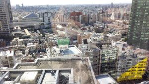

News
-
東田 茉莉花 wrote a new post, Newアートワーク！, on the site Real Baby – Real Family 3年 2か月前
bonjour, tout le[…]
-
-
-
-
浅野 隆弥 wrote a new post, ベイビーフランス遠征, on the site IQが1あがった 3年 2か月前
こんにちは。
最近目、肩、腰が辛くなってきている浅野です。
今回はLavalVirtualの展示でフランスに行ってきたのでそのことについてまとめたいと思います。
日程は3月16日から3月28日(29日帰国)でパリで5泊して、その後ラヴァルで6泊ぐらいして最後にレンヌで1泊という怒涛のスケジュールでした。パリにいる間はルーブル美術館に行ったりマルシェに行ったり(ハコスコで)凱旋門に行ったり(ハコスコで)エッフェル塔[…]
-
agaz wrote a new post, Laval Virtual 2017に展示、発表してきました。, on the site 我妻の白井研いそうろう日記 3年 2か月前
さて、記念すべき一枚目の記事はフランスのLavalで3/22~26の期間に開催されていたLaval Virtual 2017の振り返り記事です。主に設営、展示、口頭発表について書くのでパーティーなどの詳細は割愛します。めちゃめちゃ楽しかったで[…]
-
Rex HSIEH wrote a new post, 2017 France Trip Continued (Laval), on the site Rex's Japan Adventure 3年 2か月前
第五日から、先発組と大樹我妻と白井先生を合流しました。私達一緒に電車でLAVAL展示の参加するために、LAVALへ向かいました。LAVALはフランスのとても古い町です。今の人口は二十万ぐらいです。町の中に至る所が古代な城と修道院があります。都心には古代から住民の生活を支援したマイエンヌ川が流れています。
展示の五日間で赤ちゃんチームは四百以上のお客さんに体験してもらいました。主な評価はよいものでした。お客さんはこのプロ […]

-
Rex HSIEH wrote a new post, 2017 France Trip (Paris Sightseeing)!, on the site Rex's Japan Adventure 3年 2か月前
3月16日から同月28日まで、白井研究室の赤ちゃんチームはフランスへLaval Virtual 2017の展示に参加するためにフランスへ行きました。私がフランスに旅行に行くのはこれで２回目になります。
三 […]

-
-
-
Rex HSIEH wrote a new post, 特別だし、忙しいしの週, on the site Rex's Japan Adventure 3年 3か月前
This week is a very unique way in many ways. One of which is that our supervisor Shirai-sensei is absent due to having to go to America to take care of students at Seattle. The second reason being the number of […] 
-
Rex HSIEH wrote a new post, Media Ambition Tokyo, on the site Rex's Japan Adventure 3年 3か月前
On Sunday March 5th, 2017, I went to Roppongi Hills in Tokyo for the Media Ambition Tokyo show. The exhibition was located at the 52th floor of the tallest building in Roppongi Hills called the Tokyo sky view […]

-
東田 茉莉花 wrote a new post, 初めて学会参加してみたれぽ, on the site notepage 3年 3か月前
こんにちは東田です．3/2-4にインタラクション2017に参加してきました．
来たぜ明治大学中野キャンパス！大学でっかい．
ホールもすごい．前の椅子に着いた机と座椅子．大きめでなのがうれしい……とても便利……
今回は一日目，二日目の正午までは口頭発表とインタラクション展示を見て回り，後はクロージングまで展示の設営と実際の展示を行っていました．
三日目の設営時に素敵に無敵に寝坊したメンバ[…]
-
渡邉 翔 wrote a new post, 藤澤先輩による多重化映像技術ワークショップ後半, on the site 渡邉翔の研究日誌 3年 3か月前
こんにちは、渡邉です
多重化映像技術ワークショップの第3回と第4回をまとめて終わらせました。
他人の作った物を見るだけでも楽しいですが、それを自分でやってみるのはもっと楽しいです。さて、今回はシェーダー、特にフラグメントシェーダーをもう少し詳しくやりました。フラグメントシェーダーとは表示する色や明るさ、合成や出力を司るものって感じですかね。
第3回ではフラグメントシェーダを使って画像のフェードアウトをやっ[…]

-
渡邉 翔 wrote a new post, 藤澤先輩による多重化映像技術ワークショップ前半, on the site 渡邉翔の研究日誌 3年 3か月前
こんにちは、渡邉です。
今日は藤澤先輩による多重化映像技術のワークショップで多重化の歴史やPlayCanvasについて教わりました。第1回と第2回を終わらせることができました。
予定では第4回か第5回まで続くようです。
今までこの目で見てきたExPixelやExField以前のものについても知ることができて、進化の歴史を感じました。
また、PlayCanvasを久しぶりに触りました。3年前期のゲームプロ[…]

-
望月 宥冶 wrote a new post, Japan VR fest.展示, on the site Real Baby – Real Family 3年 3か月前
こんにちは。望月です。
2月25日に行われたイベントJapan VR Fest.に参加し、「Real Baby – Real Family」を展示させて頂きました。
今回はJapan VR festでの展示の様子をお届け致します。
私たちのチームは前日設営には参加せず当日設営だったため、朝8:00に会場入りするために、
大学を朝5:00に出発しな[…] -
Rex HSIEH wrote a new post, 秋葉原でのVR展覧会, on the site Rex's Japan Adventure 3年 3か月前
On Feburary 24th, 2017, me and the baby team went to Akihabara(秋葉原), the world famous anime and manga culture center in Tokyo, to exhibit the latest project of the baby team. Our team departed from our Sense […]
-
Rex HSIEH wrote a new post, Jan 23rd 2017 Trip to Todai and Dr. Hao Li presentation, on the site Rex's Japan Adventure 3年 3か月前
On the 23rd of February, 2017, me and Shirai-sensei traveled together to Tokyo to attend Dr. Hao Li’s presentation. Before we went to the presentation however, the two of us stopped by Todai to attend the IVRC […]

-
東田 茉莉花 wrote a new post, 初っ端からPlayCanvasが実行できない時の話, on the site notepage 3年 3か月前
こんにちは東田です．
本日は新四年のゼミ日でした．
全員の進捗報告を行った後に，プロジェクターに接続した途端にPCがブルースクリーンを吐き出した望月くんを中心とし，Playcanvasを用いた多重化のワークショップを行いました．
基礎的なグラフィクス数学の話から始まり，PlayCanvasを用いた簡単な画像変化デモを作る事になったのですが…
新規作成！NEWを押していざEDIT．[…]
-
望月 宥冶 wrote a new post, 2017年春の「Real Baby」展示情報, on the site Real Baby – Real Family 3年 3か月前
こんにちは。望月です。
今回は2017年2〜3月の展示情報についてお知らせ致します。
IVRCよりパワーアップした展示をお送りするので、是非遊びに来てください。
Japan VR fest
日時: 2017年 2月 25日(土) 11:00~18:00 (撤収作業の都合上18:00前に体験を終了する可能性があります。)
場所: ベルサール秋葉原 2階 アキバ大好き祭内
昨年度まではOculus Festival[…] - もっと読み込む